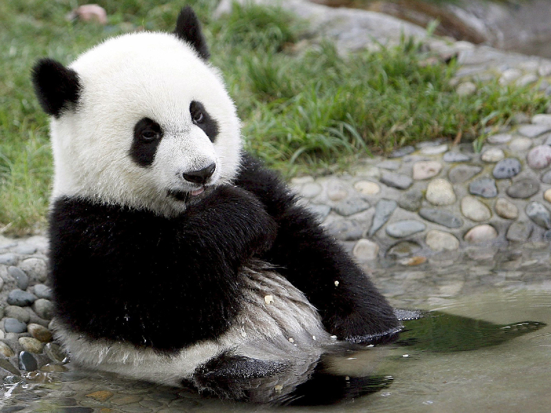

Das ist die Pandaseite schlechthin. Jeder Fan dieser augenberingten, süßen und diätfaulen Teddybär-Spezies kommt hier auf seine Bambuskosten.
Pandababy>Menschenbaby
Warum Du dein Menschenbaby noch heute für ein Pandababy eintauschen solltest:
Pandas schlafen im Grunde die ganze Zeit und gehen niemandem auf den Geist
Wenn sie wach sind, essen sie, hüpfen aufeinander rum oder knabbern sich gegenseitig an, dein jetziges Baby würde da schon heulen #laaaangweilig
Pandababies sind im Gegensatz zu deinem Baby einige Millionen Euro wert, ein gutes Tauschgeschäft also ($$$)
Wenn das Pandababy mal ausgewachsen ist, kann es dir ungeliebte Besucher*innen vom Leib halten (
Da bleibt die Schwiegermutti fern), dein nutzloses und undankbares Menschenbaby zieht nach 20 Jahren aus und du siehst es nie wieder (eigentlich ein Pluspunkt, aber Schwamm drüber)
Falls du noch nicht überzeugt bist:

So sieht ein Panda aus. Die Mischung aus dem schwarz-weißen Swag und der Seelenruhe,
die der Panda beim Essen ausstrahlt, hebt sich deutlich von der langweiligen Einfarbigkeit deines Babies und seinem nervigen Gekreische ab.